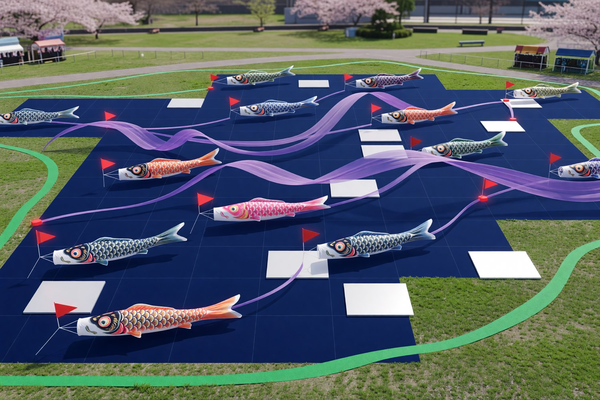

Streamer points
Ready42
36 lifted6 queued
May 5 route health, family arrivals, crews, and wind calls.

Live sequence for morning lift and guest flow.
Bridge rail safety check
North and south ladder teamsWind call with route captains
Hold threshold: 22 km/h gustsMain streamer lift
Families gather at iris gateChildren's photo window
Quiet route, no cartsCapacity by display corridor.
16 carp, 5 crews, 2 police escorts
10 carp, 3 crews, ceremony stage
8 carp, 2 crews, vendor queue
Dedications and arrival needs that changed in the last hour.
| Family | Streamer | Arrival | Need | Status |
|---|---|---|---|---|
AAArai / age 7 | Vermilion long carp | 06:25 | Quiet photo spot | Ready |
KMKobayashi / age 4 | Indigo father carp | 06:50 | Grandparent seating | Seating |
STSato twins | Green sibling pair | 07:05 | Pickup after parade | Confirm |
YNYamada / age 9 | Iris scale carp | 06:30 | Photo permission | Ready |
Update public route behavior and crew thresholds.
Assignments by lead, corridor, and current constraint.
| Lead | Corridor | Shift | Constraint | Action |
|---|---|---|---|---|
NANori A. | North bridge | 05:20–08:40 | Ladder lock | |
HTHana T. | Iris gate | 06:00–09:00 | Family queue | |
RKRen K. | Schoolyard | 05:50–10:30 | Stage access |